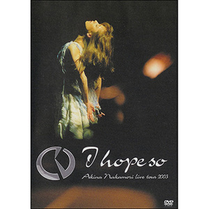

现场视频：第10张
发行年份：2003年
发行日期：12月17日
| 歌名 | 作词 | 作曲 |
|---|---|---|
| Opening | ||
| 風の果て | 松井五郎 | 織田哲郎 |
| うつつの花 | 松井五郎 | マシコタツロウ |
| 紡ぎ唄 | 川江美奈子 | 川江美奈子 |
| Days | 中森明菜 | 織田哲郎 |
| 駅 | 竹内まりや | 竹内まりや |
| 温り | 井上あづさ | 井上あづさ |
| 乱火 | 大津あきら | 鈴木キサブロー |
| 予感 | 飛鳥涼 | 飛鳥涼 |
| 乐队介绍 | ||
| スローモーション | 来生えつこ | 来生たかお |
| Blue On Pink | 三浦徳子 | 国安わたる |
| SOLITUDE | 湯川れい子 | タケカワユキヒデ |
| LIAR | 白峰美津子 | 和泉一弥 |
| 燠火 | 吉田美奈子 | 吉田美奈子 |
| マリオネット | 安岡孝章 | 安岡孝章 |
| 月華 | 松井五郎 | 梶原秀剛 |
| 薔薇一夜 | 大津あきら | 鈴木キサブロー |
| 難破船 | 加藤登紀子 | 加藤登紀子 |
| LA BOHÈME | 湯川れい子 | 都志見隆 |
| I hope so | 中森明菜 | 井上慎二郎・武部聡志 |
| 特典映像 |
首发规格：DVD: UMBK-1073
唱片公司：UNIVERSAL J
再发行：
2005年6月29日 - DVD: UMBK-9119
2006年6月7日 - DVD: UMBK-9147
2016年5月4日 - DVD: UPBH-1404~10
2020年10月7日 - DVD: UPBY-9112